localhost:5173, FastAPI + PydanticAI agent on localhost:8000, model gpt-5.6-terra via Portkey). The checks were re-run in a phone-width browser and captured on 13 Oct 2026; check 10 reuses the screenshot of the real guest order placed during Problem 9. Every stock number and price was compared with data/campus_customs.db at the time of the test.
Summary
| # | Check | Area | Result |
|---|---|---|---|
| 1 | Chatbot gives the exact inventory count for a size | Chatbot | PASS |
| 2 | Chatbot reports a sold-out size and the real price | Chatbot | PASS |
| 3 | Category question ("what hoodies are available?") | Search results | PASS |
| 4 | Search results appear on the page as product cards | Search results | PASS |
| 5 | Each card shows image, name, price and short info | Search results | PASS |
| 6 | A chat result card opens the product detail page | Search results | PASS |
| 7 | Add to cart: the photo bubble flies into the cart | Usability | PASS |
| 8 | Cart page shows what the shopper is ordering | Usability | PASS |
| 9 | Checkout works as a guest (no account) | Usability | PASS |
| 10 | Guest order is placed and confirmed | Usability | PASS |
| 11 | Handsome Dan barks when the logo is clicked | Sound effects | PASS |
| 12 | Handsome Dan growls when an item is removed | Sound effects | PASS |
| 13 | "Picked for you" recommendations from click history | Usability | PASS |
| 14 | Low stock is added to the restock purchase list | Usability (business) | PASS |
A. Chatbot conversation
The shopper asks Handsome Dan specific questions. The answers must come from the live database, not be invented.
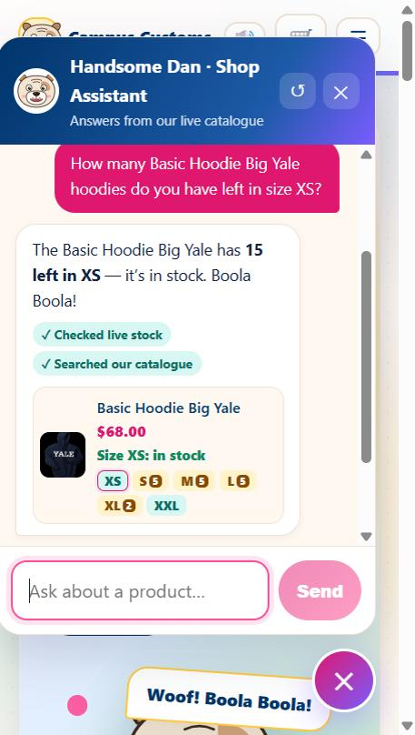
Check 1: Inventory count for a specific size PASS
inventory table (XS = 15). The "✓ Checked live stock" badge shows it looked the number up with its check_stock tool instead of guessing.The product card also shows every size's stock (XS ringed; S, M and L amber with 5 left; XL amber with 2; XXL in stock), which all match the database.
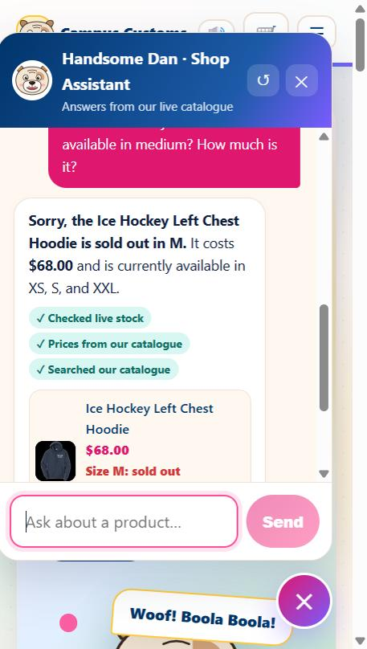
Check 2: Sold-out size and price PASS
The card repeats "Size M: sold out" in red, so the shopper can't miss it.
B. Dynamic search-result cards
A category question makes the agent search the catalogue and return structured matches. The website then draws these as product cards on the page.
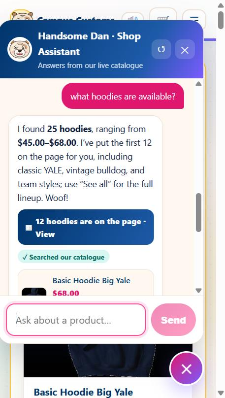
Check 3: Category question triggers a catalogue search PASS
The agent returns these matches in a structured page_results field (title, product ids, total). The backend turns those ids into full product cards from the database.
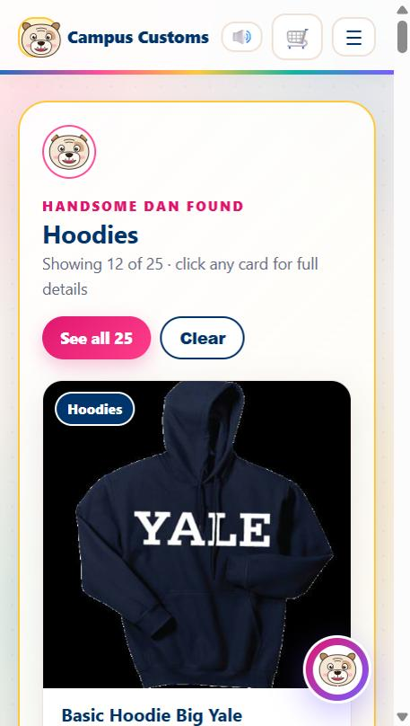
Check 4: Results appear on the page dynamically PASS
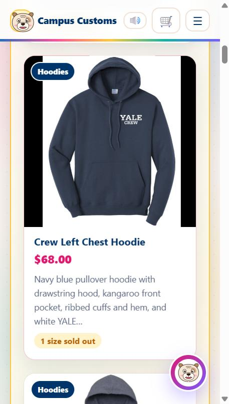
Check 5: Each card shows image, name, price and short info PASS
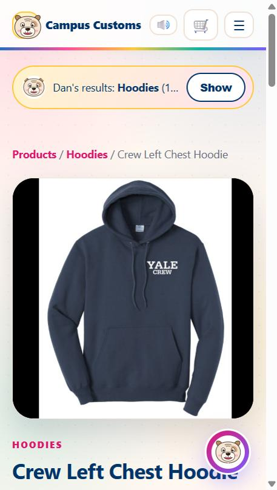
/products/crew-left-chest-hoodieCheck 6: A chat card opens the single-item detail page PASS
C. Usability features and interactive effects
The cart, guest checkout, recommendations and restocking (Problem 9), plus the bark, fly-to-cart bubble and growl (Problem 10).
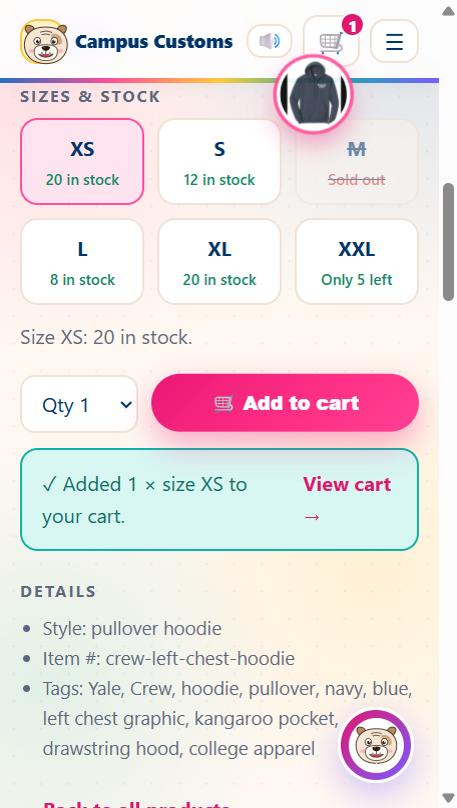
Check 7: Add to cart: the bubble flies into the cart PASS
The animation is skipped automatically for shoppers whose device asks for reduced motion. For this capture the normal setting was simulated, because the test browser has reduced motion turned on.
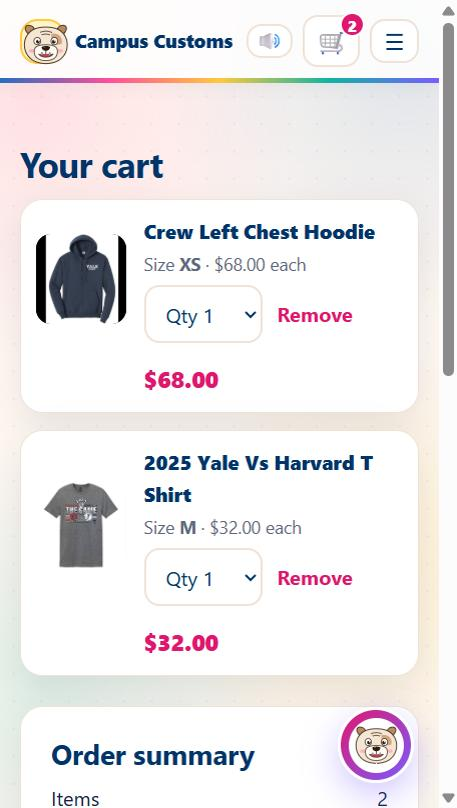
/cart.Check 8: The cart shows what the shopper is ordering PASS
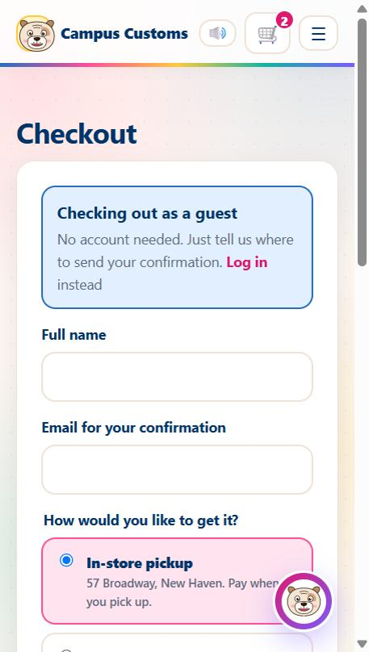
/checkout while logged out.Check 9: Guest checkout (no account needed) PASS
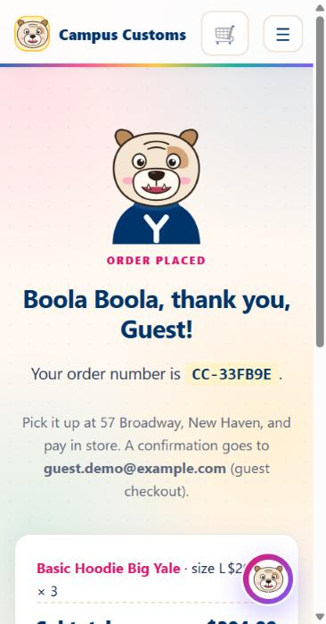
Check 10: Guest order is placed and confirmed PASS
user_id NULL, and the hoodie's L stock went down from 8 to 5.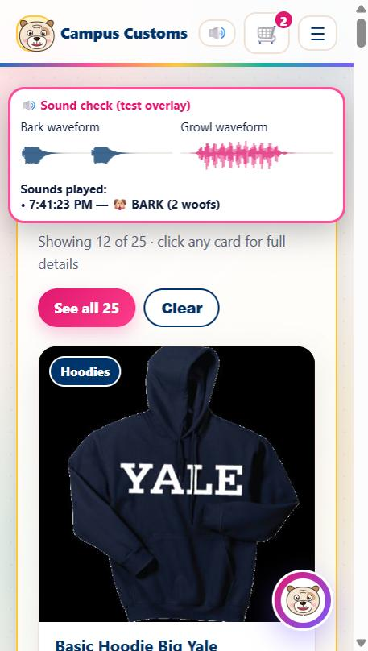
Check 11: Handsome Dan barks when the logo is clicked PASS
The sounds are generated in the browser (Web Audio API), only play after a click, and can be muted with the 🔊 button in the nav bar.
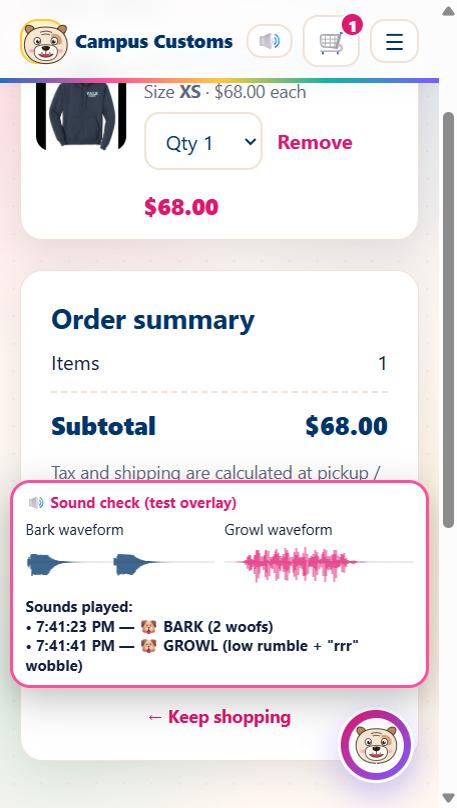
Check 12: Handsome Dan growls when an item is removed PASS
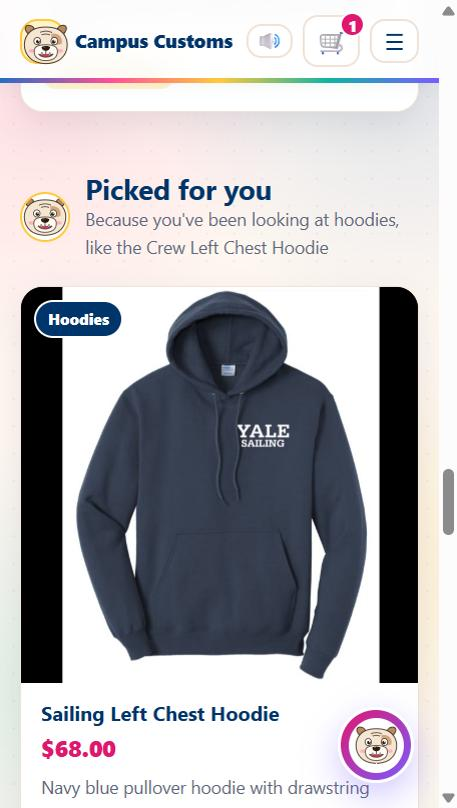
Check 13: Click history drives "Picked for you" PASS
product_views table) and now shows "Picked for you · Because you've been looking at hoodies", with matching in-stock hoodies the shopper hasn't opened yet.While testing, the label first read "Because you viewed 2025 Yale vs Harvard T Shirt" (the most recent click), which didn't match the hoodie picks. It was fixed to name the shopper's main interest.
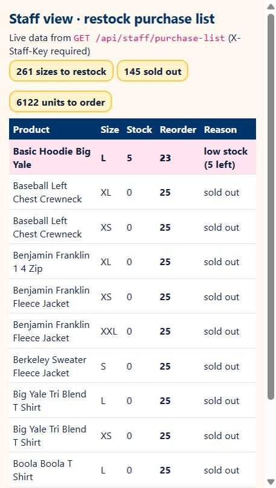
GET /api/staff/purchase-list, shown as a table.Check 14: Low stock goes on the restock purchase list PASS
This list is internal: the endpoint requires a staff key and isn't linked from the public site. It can also be exported to output/purchase_list.csv.
scripts/check_agent.py 22/22 (chatbot honesty, search results, memory, recommendations) · scripts/check_shop.py 15/15 (cart, guest checkout, no overselling, restocking, recommendations) · scripts/check_auth.py 16/16 (accounts and password hashing).